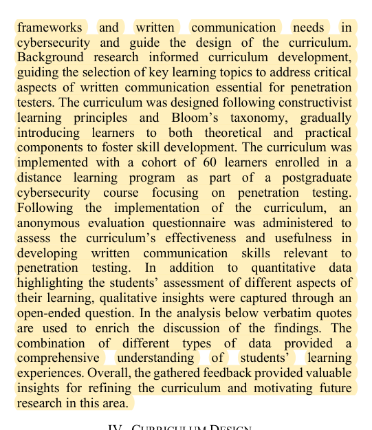
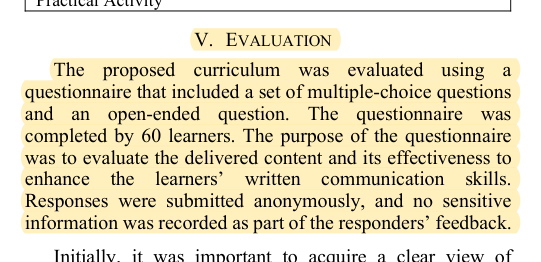
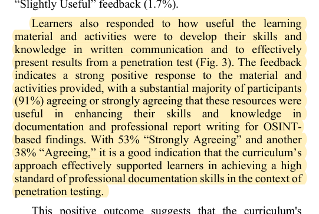

R32 · IEEE education study methods
Student questionnaires describe experience rather than technical correctness
Balancing Generative AI and Critical Thinking to Develop Written Communication Skills in Cybersecurity
Apostolos Charalambous, Andriani Piki, Joakim Kävrestad, Eliana Stavrou · 2025
IEEE EDUCON 2025; public accepted author manuscript from the University of Lancashire, 10 pages
What the study investigates
The study integrates generative AI and critical-thinking activities into cybersecurity report writing and asks whether learners find the course material useful.
How it was studied
Sections III and V describe 60 distance-learning postgraduate students who complete an anonymous questionnaire. Multiple-choice items and one open-ended question address prior experience and the usefulness of different content. There is no model-component ablation or randomized teaching comparison.
Findings
Ninety-one percent agree or strongly agree that the materials and activities help develop the relevant skills. This is self-reported experience, not an improvement demonstrated by blinded evaluation of work.
Limits of the evidence
No objective pre/post analysis confirms writing gains, and there is no directly transferable sample-size derivation. Sixty participants are not a minimum for DualGraph-OSCE, and a small station trial is not equivalent to an entire course.
How it informs DualGraph-OSCE
A brief post-use form can ask about task operation, role naturalness, understandability of feedback, and specific problematic exchanges. Report item distributions and open responses separately. Do not construct an unvalidated aggregate score. The primary role-consistency and assessment-agreement endpoints remain separate from user experience.
Where to cite it
Evaluation: questionnaire purpose and participant instructions. Do not use it to establish algorithmic effectiveness.
Possible manuscript wording
An EDUCON course study uses anonymous questionnaires and open responses to collect learner feedback. Our user feedback supplements live-use observations and is reported separately from role and assessment correctness.
[R32·1]This is a manuscript-specific paraphrase, not a quotation from the source. The excerpts below define what the citation supports. The proposed method and its expected benefits are not findings of the cited paper.
Source passages and precise locations
Page numbers refer to physical pages in the saved original PDF, including any repository cover sheets. Compilation page numbers are listed separately. Yellow highlighting marks the passage used for the argument.
R32-E1Course participants and study approach
Original PDF page 4. Highlight compilation page 449. The highlight identifies the passage used here; consult the full original page for its context.

R32-E2Sixty questionnaire responses and question types
Original PDF page 7. Highlight compilation page 452. The highlight identifies the passage used here; consult the full original page for its context.

R32-E3Self-reported findings and their measurement target
Original PDF page 8. Highlight compilation page 453. The highlight identifies the passage used here; consult the full original page for its context.
